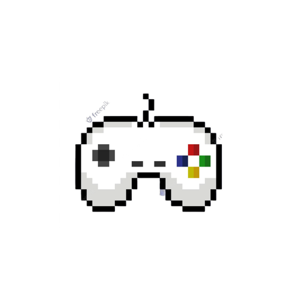

Console
A console is the combination of a monitor and keyboard. It is a rudimentary interface in which the monitor provides the output and the keyboard is used for input. Sometimes user use controller for input.
Portable
It is able to be easily carried or moved, especially because being of a lighter and smaller version than usual, as long as you have power supply and output you can use it.
Controller
It is an input device used with video games or entertainment systems to provide input to a video game, it is different from a keyboard because you'll be hold the controller.